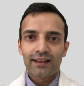

ПРОГРАММА
Уважаемый доктор!
От лица компании «Такеда» и международных экспертов в области онкогематологии приглашаем Вас на вебинар EMERGE 2021:
ОТ КЛИНИЧЕСКИХ ИССЛЕДОВАНИЙ ДО РЕАЛЬНОЙ КЛИНИЧЕСКОЙ ПРАКТИКИ, ОБЕСПЕЧИВАЕМ БУДУЩЕЕ ПАЦИЕНТОВ С ПОМОЩЬЮ ИНГИБИТОРОВ ПРОТЕАСОМ
25 февраля 2021 года, четверг
[15:00 – 16:15]
Преодолевая разрыв между эффективностью лечения в условиях реальной практики и клинических исследований
Prof.Dr.Ajal Chari (Chair)
Prof. Evangelos Terpos

Proffessor
Ajai Chari
Ajai Chari
Professor
Evangelos Terpos
Evangelos Terpos
Ингибиторы протеасом в терапии РРММ: где мы сейчас?
Prof.Kwee Yong
 Professor
Professor Kwee Yong
Длительная терапия ММ ингибиторами протеасом: переключения внутри одного класса препаратов
Prof.Wenming Chen
Professor
Wenming Chen
Wenming Chen
Длительное лечение РРММ: к чему мы стремимся в лечении пациентов с высокой чувствительностью к леналидомиду и с высоким риском прогрессии?
Prof. Graham Jackson
Professor
Graham Jackson
Graham Jackson
Длительная терапия РРММ: к чему мы стремимся при лечении пожилых/ослабленных пациентов?
Prof. Maria-Victoria Mateos
Professor
Maria-Victoria Mateos
Maria-Victoria Mateos
Для того, чтобы сделать наш вебинар интерактивным, видео будут доступны к просмотру накануне мероприятия. Примите участие в панельной дискуссии и задайте Ваши вопросы.
ЦЕЛИ ВЕБИНАРА «EMERGE 2021»:
- Обсудить последние данные клинических исследований ингибиторов протеасом в терапии рецидивирующей/рефрактерной множественной миеломы, а также ознакомиться с текущими рекомендациями по лечению и контролю инфекции в повседневной клинической практике.
- Определить важность эффективности в условиях реальной клинической практики; длительности ответа на терапию и их значимость в принятии терапевтического решения у пациентов с РРММ.
- Обмен опытом ведения пациентов в условиях реальной клинической практики.
Пожалуйста, убедитесь, что Вы зарегистрированы на мероприятие